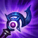

Orianna La Dama Mecanica
Empezaremos con esto ya que nos da regeneracion de mana y ademas nos aumenta el mana maximo por cada habilidad que usemos, intentaremos tenerlo al maximo lo antes posible por que gracias a su escudo nos podemos salvar de alguna situacion incomoda.
en mi caso las prefiero mas que las Botas de Hechicero pues orianna necesita mucho coldown para poder spamear su Orden: atacarlo mas rapido posible.
Reloj de arena de ZhonyaReloj de Arena de Zhonya, muy necesario en combates contra personajes como Zed, Katarina, etc... si ves que vas muy sobrado en vez de este objeto es mejor pillar el Mejai.
Sombrero Mortal de Rabadon, este item si es escencial con orianna pues nos dara una increible cantidad de daño con nuestras habilidades.
Este objeto no suele aparecer en las guias pero yo personalmente lo recomiendo bastante ya que te aumenta el daño bastante.
 Eco de LudenCon orianna es muy facil cargar la pasiva de este item pues no es una champ que se puede quedar en una sola posicion y con el spameo de nuestras habilidades obtendremos su pasiva muy rapidamente.